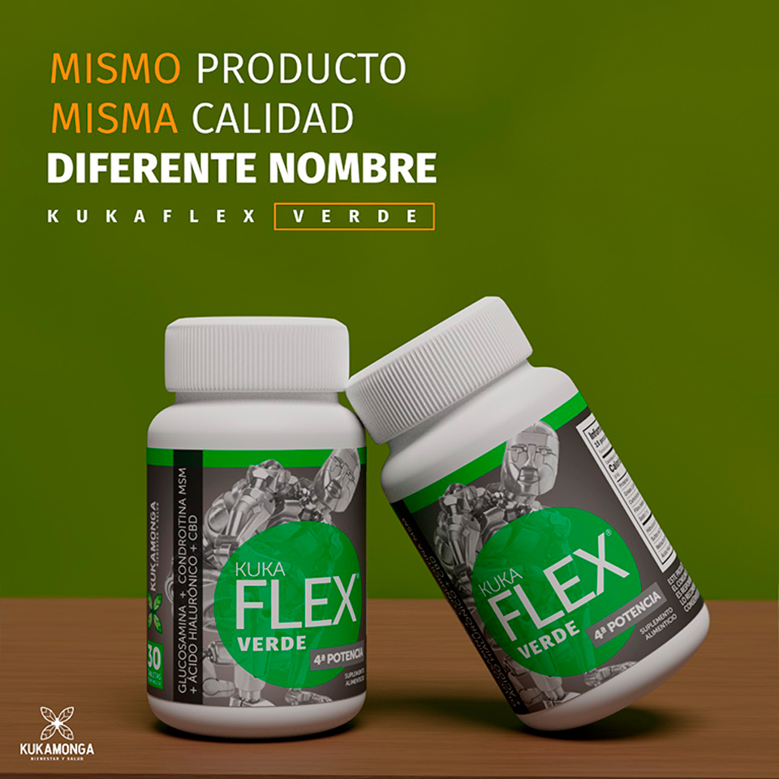

Beneficio de kukaflex verde (CBD)
Sus Beneficios
Es un complemento alimenticio formulado para la regeneración de las articulaciones y ligamentos, así mismo dando una restructuración a los cartílagos, coyunturas, daños en la columna y el nervio ciático, y con esto evitando la pérdida de líquido sinovial que rodea las articulaciones.
Comprar